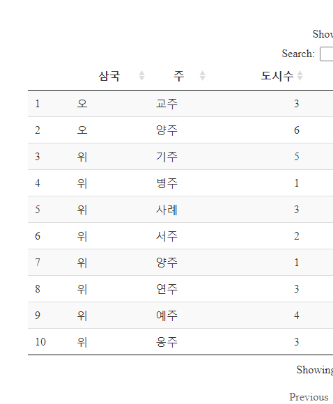

xwMOOC 데이터 저널리즘
코에이(Koei) 삼국지 국력비교
1. 팟캐스트로 듣는 코에이 삼국지 1
그것은 알기 싫다(XSFM) 팟캐스트에 최근 코에이 삼국지를 주제로 방송을 시작했다. 서양에 시오노 나나미 “로마인 이야기”가 있다면 동양은 나관중의 삼국지가 있다고 생각하는 한국인이 많다.
코에이 삼국지 1,2,3편을 직접 플레이하면 숫자와 문자만 가득하다. 삼국을 통일하기 위해서 몇달을 고생해서 밤을 새워가며 시간을 보낸 분들도 주변에서 부지기수로 볼 수 있고, 삼국지 게임을 더 잘 하기 위해서 삼국지를 게임을 한 후에 정독하는 사례도 심심치 않게 볼 수 있다.
이번에는 코에이 삼국지 게임 데이터를 추출하여 데이터를 분석해 보자.
2. 삼국지 실제 국력차이
삼국지의 조조, 유비, 손권이 게임에서는 대등하게 나오지만, 최근에 출시되는 삼국지는 실제 역사적 사실에 근거를 두고 나름 정확한 데이터가 담겨있다. 문명도 예외가 아닌데 양성균형, 서양, 백인, 남성 중심의 세계관을 조금 약화시키고 동양을 비롯한 제3세계와 여성의 비중을 늘리는 것도 사실이다.
위촉오 삼국간의 국력에 대한 주제를 다루었던 유튜브 동영상에 근거하여 실제 게임에서 데이터를 추출하여 비교분석해 보자. 유튜브 동영상에서 주장하는 내용을 요약하면 다음과 같다.
- 영토크기: 개발된 영토만 고려하면 위나라가 월등.
- 인구: 위나라 440만, 오나라 230만, 촉나라 90만 정도
- 토지: 위나라 고품질 토지, 오나라 수상지역, 촉나라 산악지역.
- 인재: 위나라의 문화수준이 높아 인재도 많음.
삼국지에서 인재가 상당한 역할을 담당하고, 인물중심으로 삼국지를 이해하는 부분이 크기 때문에 코에이 삼국지에 나타난 국력비교를 위해서 이를 별도로 뺀다.
3. 코에이 삼국지 13에 표현된 국력차이
3.1. 데이터 가져오기
코에이 삼국지 게임에 편집기를 붙여 데이터를 추출하여 엑셀로 저장한다. 다양한 데이터를 추출할 수 있지만, 인재와 관련된 장군 데이터와 주/도시와 관련된 데이터를 붙인다. 그리고 군단 정보에서 관우와 장로는 촉으로 장료와 공손공은 조조는 위로 손권은 오로 범주를 구분하고 결측값이 포함된 나머지는 분석에서 제외한다.
# 0. 환경설정 -----
library(tidyverse)
library(readxl)
library(DT)
library(treemap)
library(ggridges)
library(ggpubr)
library(d3scatter)Error in library(d3scatter): there is no package called 'd3scatter'
library(plotly)
library(crosstalk)
library(htmltools)
library(d3treeR)Error in library(d3treeR): there is no package called 'd3treeR'
library(extrafont)
loadfonts()
# 1. 데이터 가져오기 -----
city_dat <- read_excel("data/삼국지13.xlsx", sheet="도시")
# 2. 데이터 정제 -----
city_df <- city_dat %>%
dplyr::select(지방, 도시, 주, 주도, 군단, 태수, 자금, 군량, 비병역인구, 병역인구, 상업, 농업, 문화) %>%
mutate(삼국 = case_when(군단 == "관우" ~ "촉",
군단 == "유비" ~ "촉",
군단 == "장로" ~ "촉",
군단 == "조조" ~ "위",
군단 == "장료" ~ "위",
군단 == "공손공" ~ "위",
군단 == "손권" ~ "오")) %>%
filter(!is.na(삼국)) %>%
mutate(인구 = 비병역인구 + 병역인구)3.2. 국력으로 본 인구수
삼국 도시와 인구수를 먼저 뽑아 이를 표로 표현한다.
# 3. EDA - 도시수와 인구수 -----
## 3.1. 도시수
city_df %>% group_by(삼국) %>%
count(주) %>%
spread(삼국, n, fill=0) %>%
datatable()삼국 인구수를 좀더 상세히 살펴보면 다음과 같다.
## 3.2. 인구수
city_df %>% group_by(삼국) %>%
summarise(인구수 = sum(인구)) %>%
mutate(인구비율 = 인구수/ sum(인구수)) %>%
arrange(desc(인구수)) %>%
datatable() %>%
formatCurrency("인구수", currency="", digits=0) %>%
formatPercentage("인구비율", digits=1) 
삼국 도시와 인구수를 먼저 뽑은 자료를 treemap을 통해 시각화한다.
## 3.3. treemap: 삼국 - 주 - 도시 - 인구수
city_treemap_df <- city_df %>% group_by(삼국, 주, 도시) %>%
summarise(인구수 = sum(인구))
city_pop_treemap <- treemap(city_treemap_df,
index = c("삼국", "주", "도시"),
vSize = "인구수",
vColor = "삼국",
title = "삼국지 국력 - 인구수",
fontsize.labels=c(12, 8),
draw = TRUE,
type = "categorical",
palette = c("red", "blue", "green"),
fontfamily.title = "NanumGothic",
format.legend = list(scientific = FALSE, big.mark = ","),
title.legend="")인터랙티브하게 동적으로 파악하면 좀더 쉽게 인구수 차이를 면밀하게 검토할 수 있다.
### 인구수 treemap 동적 그래프
d3tree2(city_pop_treemap, rootname = "삼국지")Error in d3tree2(city_pop_treemap, rootname = "삼국지"): could not find function "d3tree2"
3.3. 국력으로 본 농업
삼국 농업과 상업을 뽑아 동일한 방식으로 비교한다.
# 4. EDA - 농업/상업 -----
## 4.1. 농업
city_df %>% group_by(삼국, 주) %>%
summarise(도시수 = n(),
농업 = sum(농업),
상업 = sum(상업)) %>%
ungroup() %>%
mutate(농업비율 = 농업/ sum(농업),
상업비율 = 상업/ sum(상업)) %>%
datatable() %>%
formatCurrency(c("농업","상업"), currency="", digits=0) %>%
formatPercentage(c("농업비율", "상업비율"), digits=1) 
삼국 농업을 뽑아 treemap으로 시각화한다.
## 3.3. treemap: 삼국 - 주 - 도시 - 농업
agr_treemap_df <- city_df %>% group_by(삼국, 주, 도시) %>%
summarise(농업 = sum(농업))
agr_treemap <- treemap(agr_treemap_df,
index = c("삼국", "주", "도시"),
vSize = "농업",
vColor = "삼국",
title = "삼국지 국력 - 농업",
fontsize.labels=c(12, 8),
draw = TRUE,
type = "categorical",
palette = c("red", "blue", "green"),
fontfamily.title = "NanumGothic",
format.legend = list(scientific = FALSE, big.mark = ","),
title.legend="")인터랙티브하게 동적으로 파악하면 좀더 쉽게 농업 차이를 면밀하게 검토할 수 있다.
### 농업 treemap 동적 그래프
d3tree2(agr_treemap, rootname = "삼국지")Error in d3tree2(agr_treemap, rootname = "삼국지"): could not find function "d3tree2"